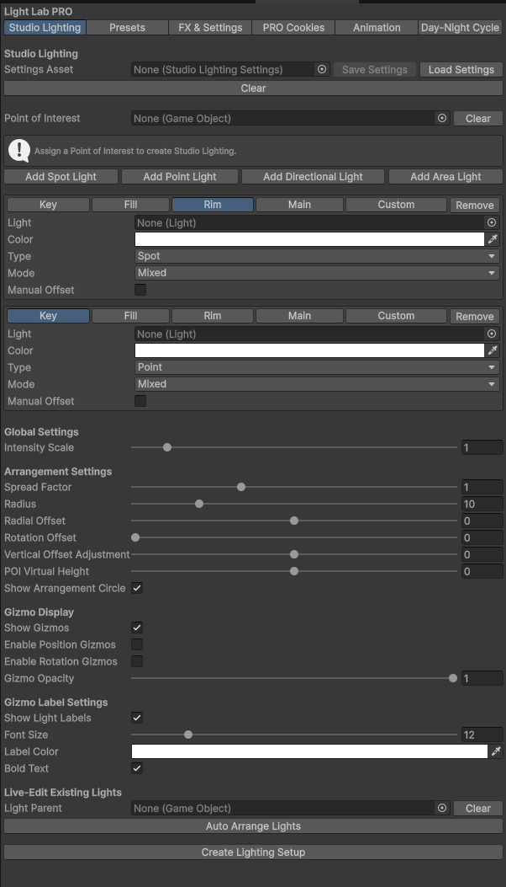
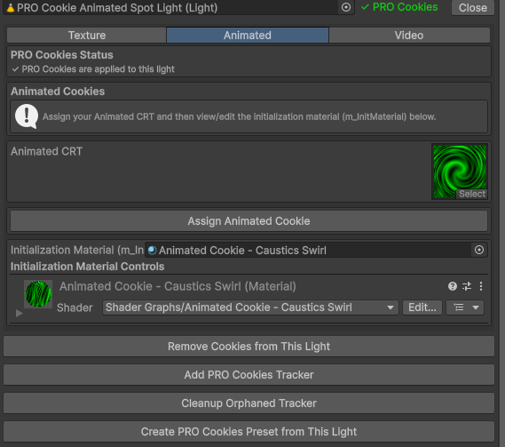
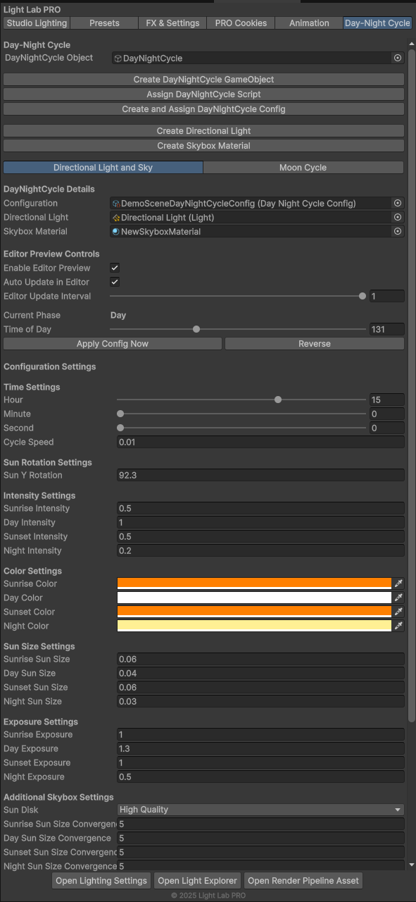

Atmosphere Scene Presets
HQ cinematic and Stylized weather looks across Sunrise, Day, Sunset, and Night — Enable, Seed Catalog, and Refresh from the Presets tab.
Atmosphere Light Ship
Light Lab PRO brings HQ and stylized Atmosphere Scene Presets, dual volumetrics, sky clouds, studio lighting, reactive FX, PRO Cookies, and a day/night Cycle Manager into one focused Unity editor window.

pick a look → enable preset → tune light & fog
Why Light Lab PRO
Instead of jumping between scattered Unity panels and custom scripts, Light Lab PRO gives lighting and sky decisions a single home. Enable a full Atmosphere Scene Preset, blend looks across the day with Cycle Manager, and layer studio rigs, FX, cookies, and volumetrics without breaking art direction.
Features
HQ cinematic and Stylized weather looks across Sunrise, Day, Sunset, and Night — Enable, Seed Catalog, and Refresh from the Presets tab.
Dedicated Raymarch and Froxel paths with directional object shafts, sky cloud god rays, and per-light contribution.
HQ volumetric cloud march and painterly stylized FBM skies, with soft sun and moon through-clouds.
Clock-driven phases, Moon Manager, celestial night sky, Lightmap Blending, and weighted look rolls that blend across each phase.
Build key, fill, rim, and custom rigs around a point of interest with live gizmos and arrangement controls.
Reactive FX, texture / animated / video PRO Cookies, firefly motion, and rotators — plus VR Mode for Quest and PCVR quality LOD.





Documentation
The docs include searchable module references, screenshots, troubleshooting, and a rounded video walkthrough.